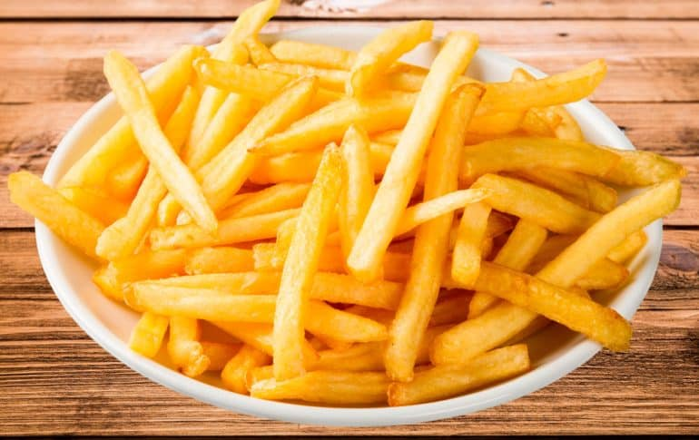

Papas Fritas
Receta de Papas Fritas Casera

Ingredientes
- 3 o 4 papas (300g.)
- 4 dientes de ajo
- Aceite de Oliva
- Sal
Elaboracion (Pasos)
- Calentar el aceite en un sarten.
- Añadir papas cortadas, la sal y los ajos.
- Freir al gusto.
- Servir en plato.